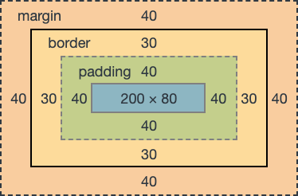

When making a website, the most time is usually spent on setting up CSS to arrange the elements. To solve this, UI frameworks such as Bootstrap were created to simplify the process of creating websites. However, the question still remains, does Bootstrap actually simplify HTML styling? Without a doubt, Bootstrap can significantly decrease the amount of time it takes to create a website but, when you venture outside of the Bootstrap presets and classes, conflicts often arise and these conflicts can take more time than using HTML itself.
The approach Bootstrap takes has merits but can also cause more problems than it fixes. The main thing Bootstrap simplifies is creating padding and margins for elements. Normally, you have to individually create the margins and paddings for each element. As you can imagine, this takes a long time especially on more complicated pages. Bootstrap simplifies this into presets that are stored as classes. This is super helpful when creating a website from scratch but when copying a site or copying a style, you run into the aforementioned limitations. There are only five presets for padding so if you want large spaces between elements, you have to either overwrite the Bootstrap preset or create your own class for just the spacing. This problem is exacerbated when dealing with columns and other Bootstrap spacing elements. For these elements, you have to manually change the Bootstrap presets to change the attributes of the elements. At this point, you are doing more work figuring out how to change the Bootstrap preset than it would take to make a custom CSS class to set the element.
The other major selling point of Bootstrap is the many presets for things like headers and dropdowns that can be utilized directly through Bootstrap. These are standardized so if you like an example found on a website, you can directly copy the code and use it yourself. This combined with good documentation makes Bootstrap good for making decent looking sites in a minimal amount of time. This approach however, prevents the creation of truly unique websites due to how elements are limited to working in a specific way. Bootstrap is a good framework as it provides a lot of presets to help in creating nice UI elements however, Bootstrap is a large framework with many overlapping elements and these elements can often cause conflicts which take a lot of time to fix. This time vs efficiency dilemma is the main trade-off to consider when using the Bootstrap framework. If you only use the Bootstrap presets, you can make good websites really quickly, but the moment you step outside of these presets the longer projects take as learning how Bootstrap elements interact with normal HTML takes a long time to understand.